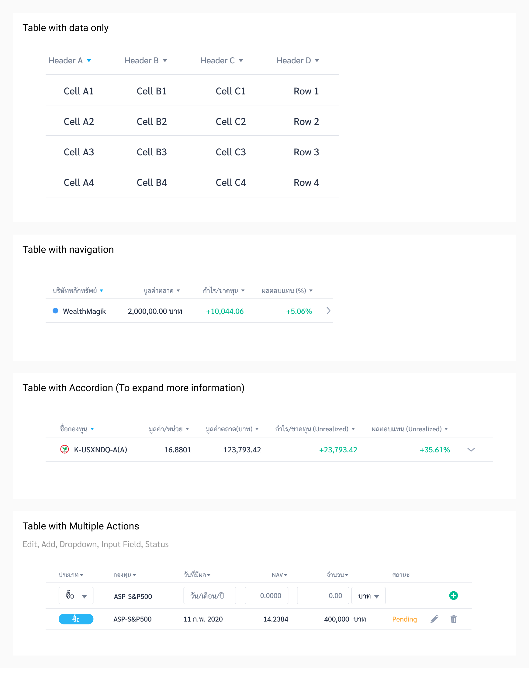
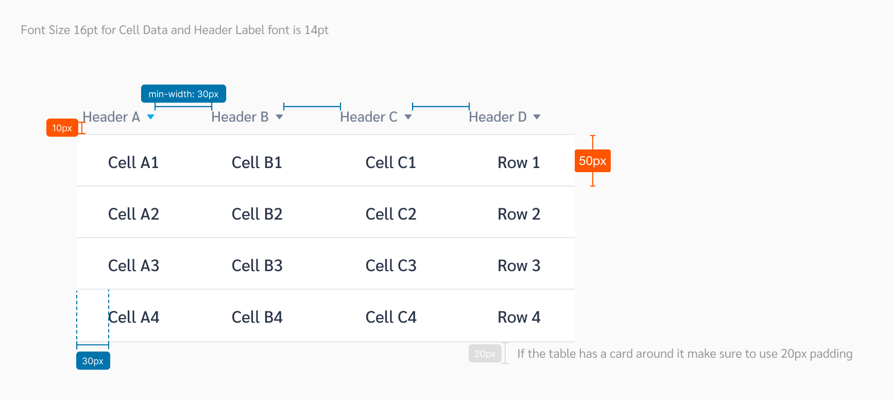
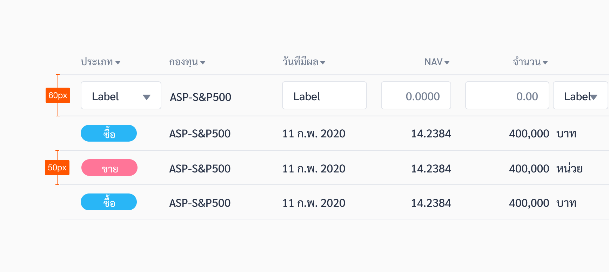
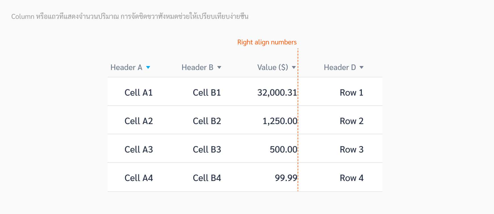
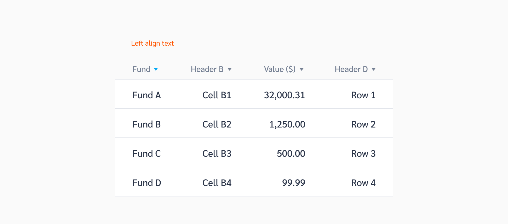
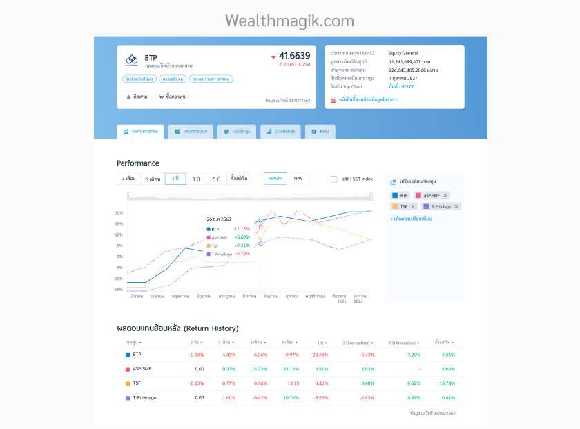
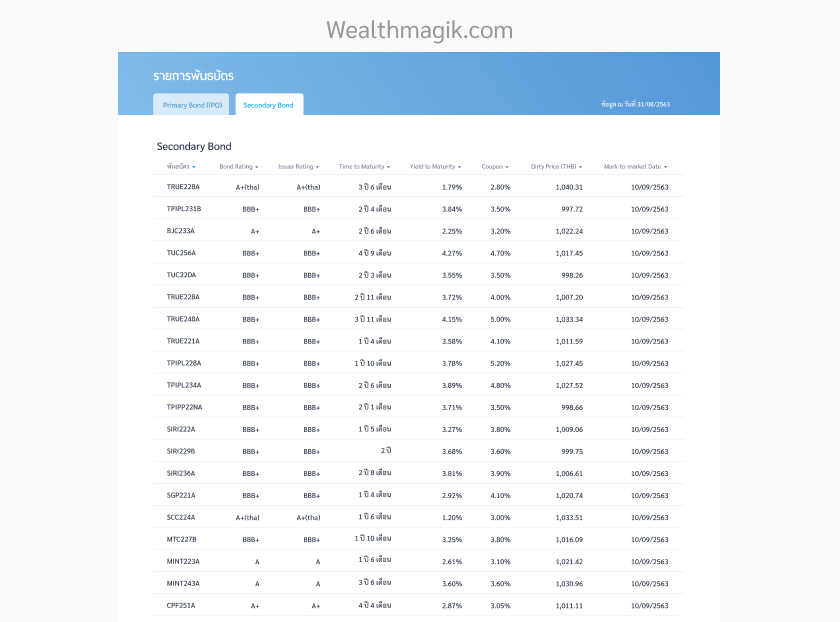
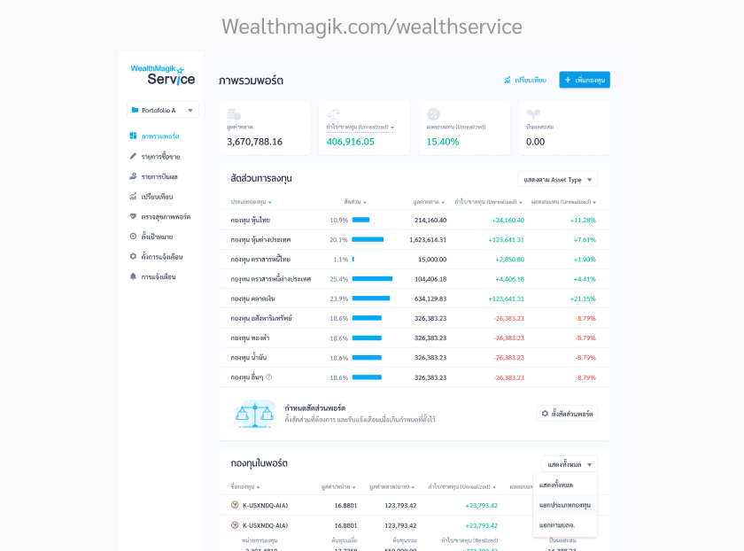
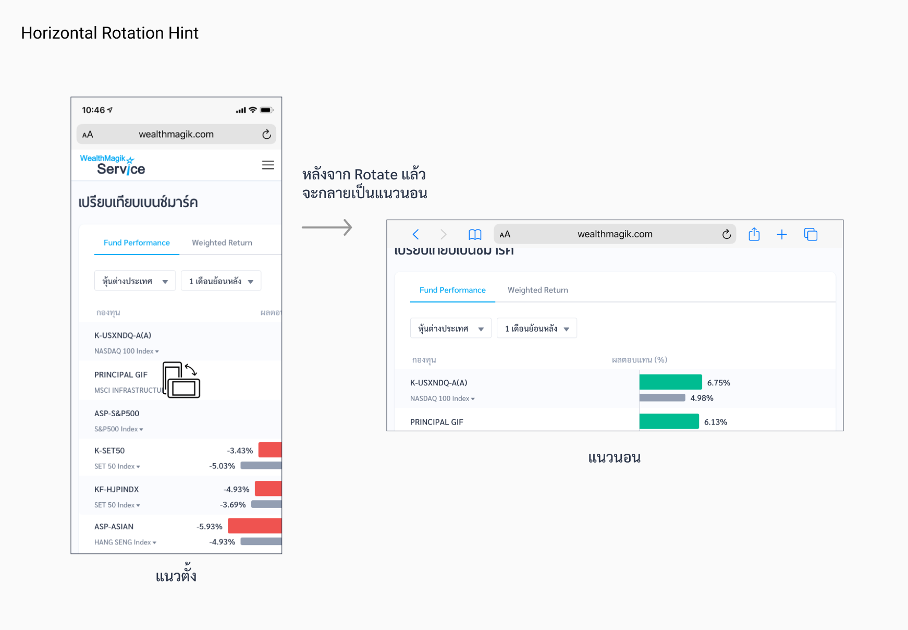

Table
Tables enable users to easily scan, understand, analyze, compare, and act upon the information within them.
Types
| Types | Purpose |
|---|---|
| Table with Data Only | ตารางทั่วไปที่แสดงข้อมูลเป็นตัวเลข และหัวตารางสามารถทำการ sort ข้อมูลในแต่ละ column ของตารางได้ |
| Table with Navigate | ตารางที่มีเครื่องหมาย “>” อยู่ที่ท้ายตาราง ของแต่ละแถว เพื่อให้ user รู้ว่า สามารถกดใน แถวนั้น เพื่อไปอ่านข้อมูลเพิ่มเติมผ่าน popup, new tab หรือการเปลี่ยนหน้า |
| Table with Accordion | ตารางที่มีเครื่อหมาย “v” อยู่ที่ท้ายตารางของแต่ละแถว เพื่อให้ user รู้ว่า สามารถกดใน แถวนั้น เพื่ออ่านข้อมูลเพิ่มเติม ที่ expand ออกมาจาก row นั้นๆ |
| Table with Multiple | ตารางที่มีการใช้งานที่หลากหลายอยู่ใน 1 แถว เช่น dropdown, input fields หรือ button ต่างๆ |
Spec
ตารางแบบอ่านค่าอย่างเดียว ไม่สามารถ input ข้อมูลได้ (50px Height)
ตารางที่มีตัว input เช่น input fields (60px Height)
Example
The following HTML code is based off the Ahancer Seed
Table with Sorting
Usage
1. ตัวเลขที่บอกปริมาณ ให้จัดชิดขวา
ตัวเลขต่างๆ ที่บ่งบอกถึงปริมาณ ต้องจัดชิดขวา (Right Align) เพื่อให้สามารถเปรียบเทียบได้ และกรณีที่บางตัวมีทศนิยม ทุกตัวควรมีทศนิยมเหมือนกัน (หากเป็นจำนวนเต็มให้ใส่ .00)
2. จัดชิดซ้ายเสมอ
หากไม่ใช่ข้อมูลที่ต้องเปรียบเทียบปริมาณ ให้จัดชิดซ้าย (Left Align) เสมอ
3. หัวตาราง ควรเป็นคำสั้นๆ
การทำให้ตัวตารางเป็นคำสั้นๆ จะทำให้ไม่กินพื้นที่ตาราง และข้อมูลดูไม่แน่น ช่วยให้ user อ่านง่ายและเร็วขึ้น
DO
ใช้ Radio สำหรับให้ User เลือกเพียง 1 ข้อเท่านั้น
DON'T
ห้ามใช้ Radio ในการให้ User เลือกตัวเลือกมากกว่า 1 ข้อ
4. ตัวอย่างการใช้ตารางในรูปแบบต่างๆ
Fund Detail
Bond List
Fund Display
Consol Report
5. ใช้ Hints เมื่อต้องการให้ user เปลี่ยนโทรศัพท์เป็นแนวนอน เพื่อดูตารางทั้งหมด
ในบางครั้งต่อให้เราปรับตารางเยอะขนาดไหน ข้อมูลที่ต้องแสดงก็อาจจะใส่ในหน้าจอโทรศัพท์ได้ไม่หมด ในกรณีนี้เราเลือกที่จะให้ user หมุนโทรศัพท์เป็นแนวนอน เพื่อแสดงตารางทั้งหมด ผ่าน hint ที่เด้งขึ้นมา เมื่อ user เข้ามาถึงหน้านั้น
โดย Hint จะแบ่งออกเป็น 2 ประเภท
